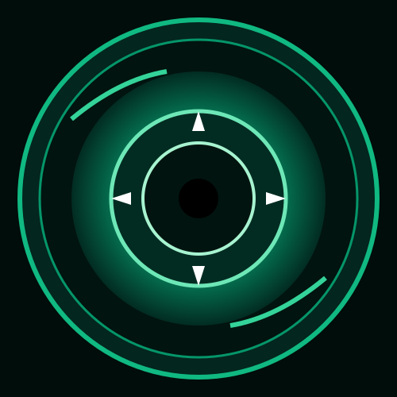

SE-006 — THE SIPHON LEECH

| SECC Risk | β (SOMNA) |
|---|---|
| Damage Type | WEIGHT (Dual HP+SP) |
| Damage Value | 10 – 16 Weight |
| Coherence Base | 03 Threshold Points |
| Han Yield | 20 PE / Cycle |
| Location | Floor 3 (Extraction Hall) |

| SECC Risk | β (SOMNA) |
|---|---|
| Damage Type | WEIGHT (Dual HP+SP) |
| Damage Value | 10 – 16 Weight |
| Coherence Base | 03 Threshold Points |
| Han Yield | 20 PE / Cycle |
| Location | Floor 3 (Extraction Hall) |
SE-006 (The Siphon Leech) is an iridescent subterranean parasite native to the raw effluent canals beneath Facility 01. Possessing a concentric razor-toothed siphon maw, it feeds directly on unrefined Han flux, simultaneously draining physical vitality and psychological cohesion (Weight Damage).
Extraction work yields maximum stability as it aligns with the entity's metabolic desire to channel fluid Han streams.
| Work Protocol | Korean Name | Success Rate | Coherence Response |
|---|---|---|---|
| Communion | Docerehan (교감) | 40% | Neutral (+0) |
| Dissection | Discernerehan (분해) | 50% | Neutral (+0) |
| Siphon | Hausuhan (추출) | 70% (Optimal) | Coherence +2 |
| Subjugation | Ferrehan (제압) | 45% | Coherence -1 |
Dual-drain lance dealing 10–16 Weight damage and siphoning 10% damage dealt as agent HP.
VIEW WEAPON DATA →Flexible bio-membrane suit granting 0.6 Weight resistance and 0.8 Grudge resistance.
VIEW SUIT DATA →